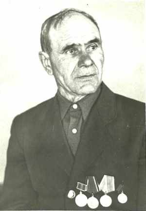
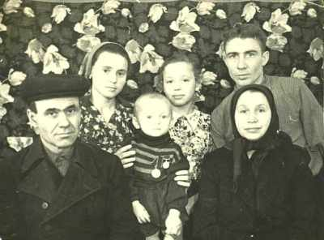

Лысенко Василий ГригорьевичРодился 05.03.1912 в д.Алферовка, Купинский р-н, Новосибирской обл., Россия. Воевал на фронте, солдат-пехотинец, в 1943 комиссован по ранению в ногу, трудился слесарем и кузнецом в МТС (машинно-тракторная станция). |

внизу Василий Григорьевич с супругой Марией Григорьевной, вверху дочери Надежда и Валентина, муж Надежды - Кравчук Владимир, по центру внук Кравчук С.В. |
|
Родители:
Братья/Сестры:
Дети:
|